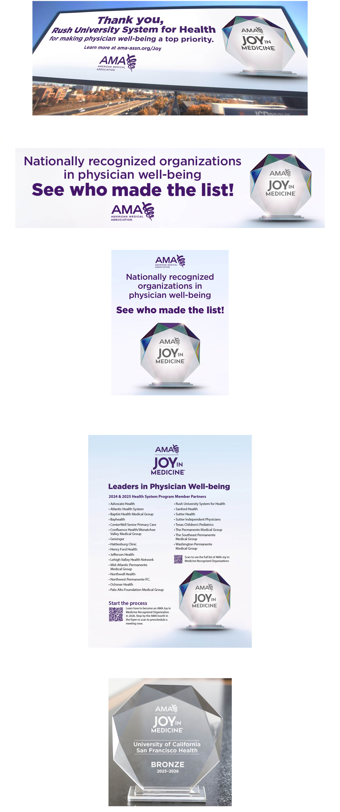

Design Lead — Brand, Campaign, Event, Print, Digital — American Medical Association
A national out-of-home campaign recognizing health systems committed to physician well-being, running across major U.S. markets in November and December 2025. The campaign generated 14M+ impressions and supported renewal of three major health system contracts. In addition to outdoor advertising, the program included digital display advertising and a recognition event where custom crystal awards were presented to Bronze, Silver and Gold level health system honorees.
